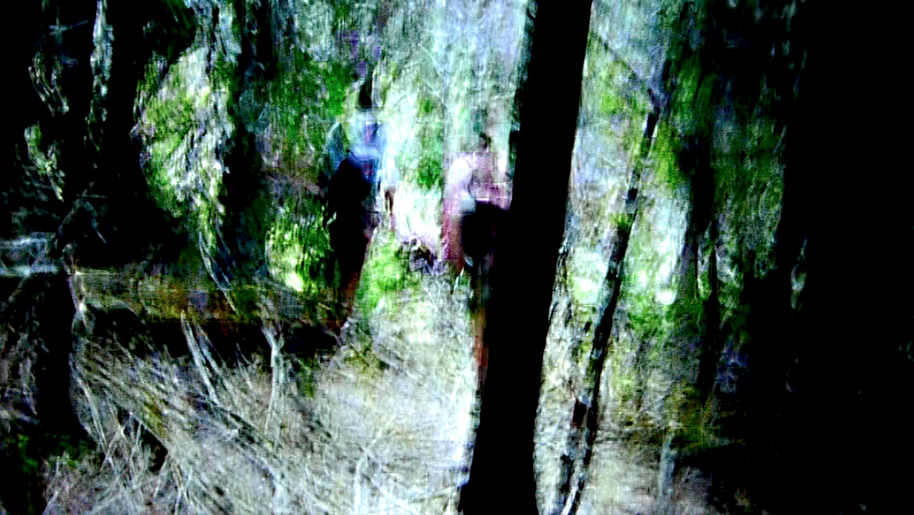
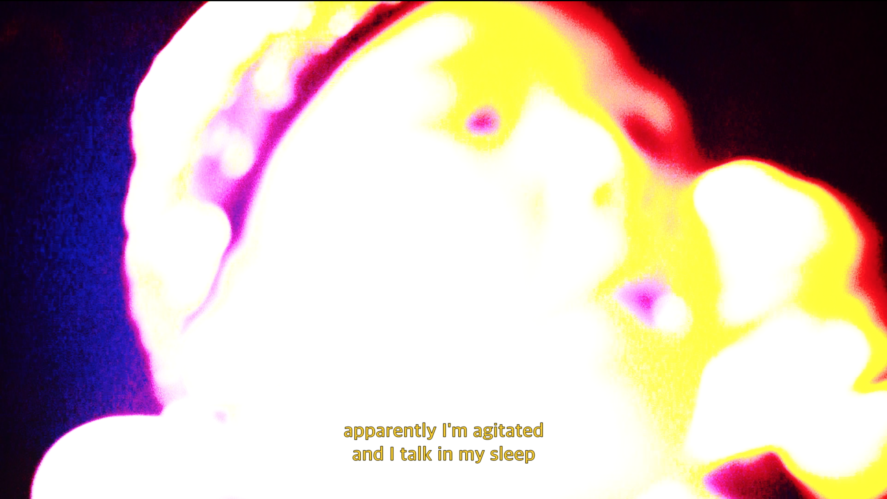
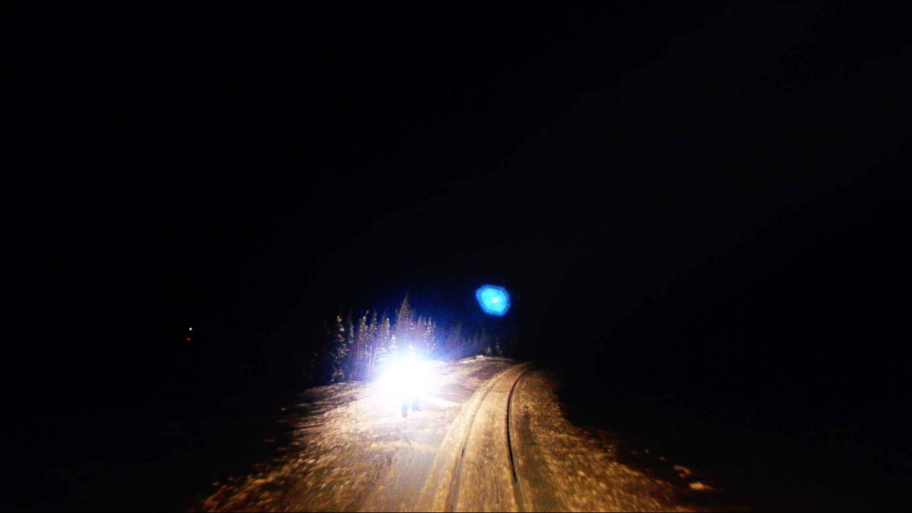

archipels : terres muables (2020)




Myriam Le Ber Assiani et Antoine Racine, documentaire expérimental, 51 minutes, 2020.
Un voyage remixé, transfiguré. Un périple hallucinatoire où s’entremêlent des histoires de survie, d’urgence, de fragilité, d’apocalypses, de résistance. Une traversée intérieure et extérieure, faite de fragments récoltés sur la route, en Islande, dans le grand-nord québécois, au Labrador, en Tunisie et ailleurs.
image, son et post-production
Antoine Racine
Myriam Le Ber Assiani
traduction
Evelyne Londei-Shortall
distribution
Vidéographe
voix
Geremiah Lorenzo Lodi
Marie-Hélène Chaussé
François Durette
Sylvie Tourangeau
Yves Demers
Jacob Cadieux
Denis Lebel
Dominic Gagnon
Anne-Marie Tanguay
Jacques Deveault
Francesca Wellington
lieux
Schefferville
Kawawachikamach
Menehek
Mjóifjörður
Baie Johan-Beetz
Hellnar
Natasquan
Tadoussac
Menzel Bouzelfa
Pessamit
Snæfellsjökull
Rivière Rupert
Geysir
Montréal
Sainte-Béatrix
Saint-Médard
Tunis
Korbous
Grandes-Bergeronnes
ZEC de Labrieville
Reykjavik
Eastmain
Jökulsárlón
Landmannalaugar
Monts Uapishka
Krafla
avec la participation du Conseil des Arts et Lettres du Québec
